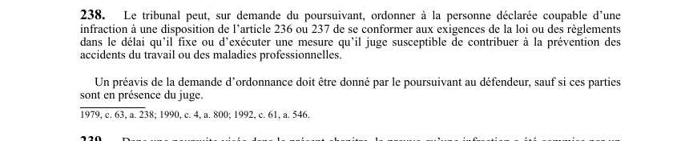

art-238-LSST : ordonnance judiciaire de conformité
Un article du wiki ⚖️ Recueil législatif
En bref
Le tribunal peut, sur demande du poursuivant, ordonner à la personne déclarée coupable de se conformer à la loi dans un délai fixé. Il s'agit d'une obligation.
- Préavis requis au défendeur sauf si les parties sont devant le juge.
🌐 LegisQuébec · 📄 PDF officiel (page 69)
Texte officiel : capture du PDF

Toucher l'image pour l'agrandir🔗 Ouvrir a cette page : LSST.pdf : page 69 · texte a jour au 26 mars 2024
Voir aussi
- art. 237 : mise danger santé travailleur · disposition pénale : quiconque agit de manière à compromettre directement et sérieusement la santé, la sécurité ou l'intégrité physique ou psychique d'un travailleur commet une infraction passible d'amendes élevées.
- art. 237.1 : revalorisation annuelle des amendes · disposition pénale : les amendes prévues aux articles 236 et 237 sont revalorisées le 1er janvier de chaque année selon la méthode prévue aux articles 119 à 123 de la Loi sur les accidents du travail et les maladies professionnelles.
- art. 239 : responsabilité employeur actes représentants · disposition pénale : dans une poursuite pénale, la preuve qu'une infraction a été commise par un représentant, un mandataire ou un travailleur de l'employeur suffit à établir la responsabilité de l'employeur, à moins qu'il prouve l'absence de connaissance et de consentement.
- art. 240 : dégagement de responsabilité du travailleur · disposition pénale : lorsqu'un travailleur est poursuivi pour une infraction, la preuve que cette infraction a été commise à la suite d'instructions formelles de son employeur et malgré son désaccord suffit à le dégager de sa responsabilité.
- ↑ Loi : LSST
Pages qui pointent ici (9)
- art-237-LSST : mise danger santé travailleur Recueil législatif
- art-237.1-LSST : revalorisation annuelle des amendes Recueil législatif
- art-239-LSST : responsabilité employeur actes représentants Recueil législatif
- art-240-LSST : dégagement de responsabilité du travailleur Recueil législatif
- CNESST Recueil législatif
- Constat d'infraction Droit du travail
- Index par profil Recueil législatif
- LSST : Chapitre VIII : Pénalités et infractions Recueil législatif
- Tableau des sanctions LSST (art. 234-242) Recueil législatif